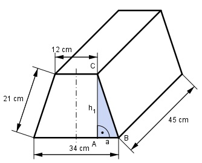

Aufgabe 55 Berechnen Sie das Volumen V und die Oberfläche O des dargestellten Prismas.

Es ist ein Prisma mit einem Trapez als Grundfläche G. V = G * h Wegen Symmetrie: 34 cm – 12 cm a = --------------- = 11 cm 2 Satz von Pythagoras im Dreieck ABC: 212 = a2 + h12 212 = 112 + h12 |-112 212 - 112 = h12 h12 = 320 |√ h1 = 17,9 cm 34 cm + 12 cm G = ---------------- * 17,9 cm = 411,7 cm2 2 V = 411,7 cm2 * 45 cm = 18 526,5 cm3 = 18,5 dm3 O = 2 * G + M = 2 * G + U * h O = 2 * 411,7 cm2 + + (34 cm + 2 * 21 cm + 12 cm) * 45 cm O = 823,4 cm2 + 3 960 cm2 = 4 783,4 cm2 = = 47,8 dm2